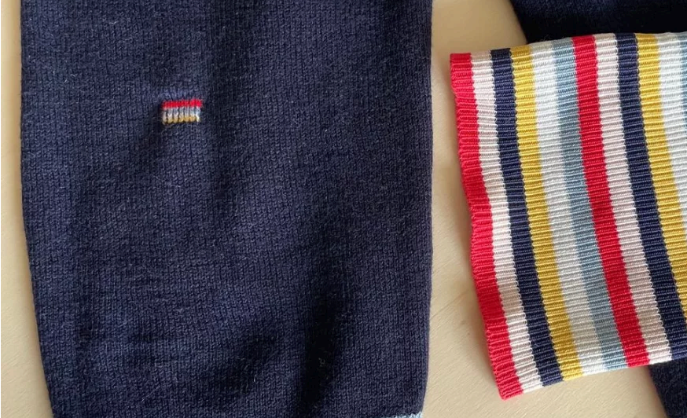
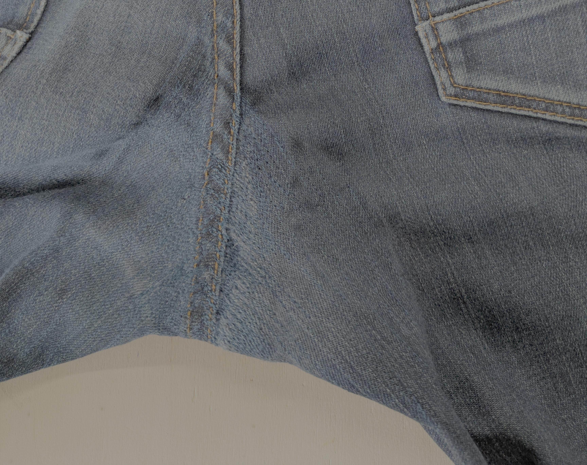
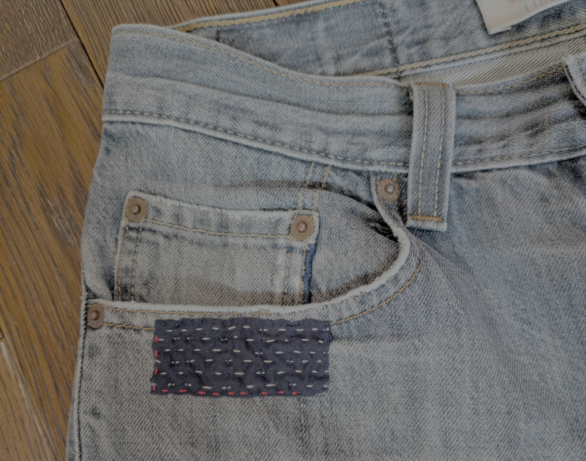
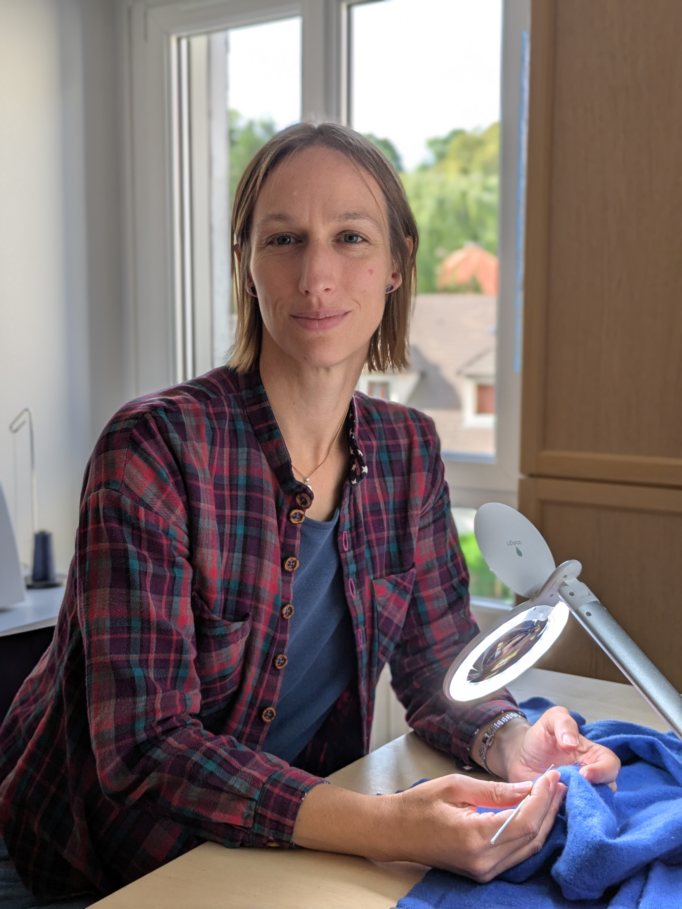

Pourquoi jeter quand on peut réparer ?
Donnez une seconde vie à vos vêtements, et prenez soin de ce que vous aimez.
Reprisage, remaillage et patchs:
À la main ou à la machine, de manière discrète ou tape-à-l'oeil,
toutes les manières sont bonnes pour renforcer le vêtement et y
ramener de la joie.

Réparation discrète ou fantaisie
Si vous souhaitez une réparation très peu visible, suivant le type de vêtement, je peux vous proposer: reprisage machine ou main avec fil coordonné, pose de patch ton sur ton, remaillage avec la laine du pull...
Team créatif·ve, je vous porpose des patchs de couleur, des broderies façon sashiko, des reprisages à motifs...


Quelques exemples de prix:
| Couture défaite | À partir de 12€* |
| Pose de patch | À partir de 22€* |
| Remaillage | À partir de 30€* |
| Changement de zip | À partir de 33€** |
| Poignets, cols, ... | Sur devis |
| ... | ... |
* Bonus réparation 6 à 8€
** Bonus réparation 15€
Contact
✉️ Email: virginie@bobopatch.fr
📍 Adresse: 13 rue Santeuil, Paris 5
📱 Téléphone: 06 52 79 34 75
🕐 Horaires: Lu-Ma-Je-Ve, 9h-16h, sur rendez-vous

À propos
Je suis Virginie Beernaert, et j'ai créé Bobopatch en 2024, pour permettre à des
personnes qui ne cousent pas de faire durer leurs vêtements dans le temps. Titulaire
du CAP métiers de la mode et vêtement flou, je me suis formée et continue de me former
à des techniques de réparation auprès de personnes expertes dans le domaine.
Mon but est de vous proposer la réparation la plus durable possible et la plus conforme
à vos goûts, selon que vous vouliez qu'elle soit visible et remarquée ou au contraire,
très discrète. Que vous aimiez votre vêtement réparé est ce qui me tient à coeur.